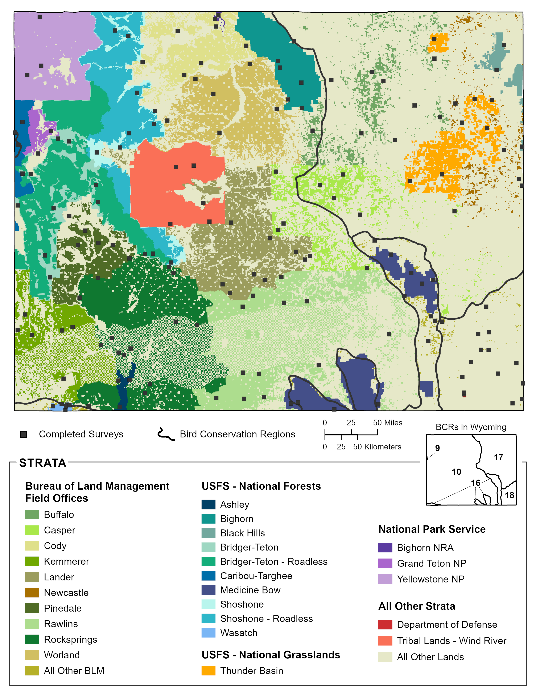

18 Wyoming

Wyoming Statewide: Total
We obtained results for Wyoming Statewide: Total by compiling and jointly analyzing data from 37 strata.
Field technicians completed 170 of 173 planned surveys (98%) in 2022. Technicians conducted 2173 point counts within the 170 surveyed grid cells between May 24 and July 20. They detected 190 bird species, including 44 priority species.
Bird Conservancy estimated densities and population sizes for 217 species that were detected in any year during which surveys were conducted, 61 of which are priority species. The data yielded robust density estimates (CV < 50%) for 94 species.
Bird Conservancy estimated the proportion of 1 km² grid cells occupied (Ψ, Psi) throughout Wyoming Statewide: Total for 222 species that were detected in any year during which surveys were conducted, 61 of which are priority species. The data yielded robust occupancy estimates (CV < 50%) for 143 species.
To view a map of survey locations, density and occupancy results and species counts within Wyoming Statewide: Total across all years of the project, follow the web link below. Hit “Ok” on the Rocky Mountain Avian Data Center Disclaimer and hit the “Run Query” button highlighted in red located near the top of the page (the map will zoom to the area of interest). To view occupancy, density, or species counts results, click on the respective tab in the upper left above the map.
All Other Lands in Wyoming
We obtained results for All Other Lands in Wyoming by compiling and jointly analyzing data from four strata.
Field technicians completed 42 of 44 planned surveys (95%) in 2022. Technicians conducted 464 point counts within the 42 surveyed grid cells between May 24 and June 24. They detected 141 bird species, including 28 priority species.
Bird Conservancy estimated densities and population sizes for 192 species that were detected in any year during which surveys were conducted, 50 of which are priority species. The data yielded robust density estimates (CV < 50%) for 57 species.
Bird Conservancy estimated the proportion of 1 km² grid cells occupied (Ψ, Psi) throughout All Other Lands in Wyoming for 192 species that were detected in any year during which surveys were conducted, 50 of which are priority species. The data yielded robust occupancy estimates (CV < 50%) for 88 species.
To view a map of survey locations, density and occupancy results and species counts within All Other Lands in Wyoming across all years of the project, follow the web link below. Hit “Ok” on the Rocky Mountain Avian Data Center Disclaimer and hit the “Run Query” button highlighted in red located near the top of the page (the map will zoom to the area of interest). To view occupancy, density, or species counts results, click on the respective tab in the upper left above the map.
18.1 Wyoming BCR 10
Wyoming BCR 10: Total
We obtained results for Wyoming BCR 10: Total by compiling and jointly analyzing data from 23 strata.
Field technicians completed 111 of 112 planned surveys (99%) in 2022. Technicians conducted 1470 point counts within the 111 surveyed grid cells between May 24 and July 20. They detected 171 bird species, including 40 priority species.
Bird Conservancy estimated densities and population sizes for 201 species that were detected in any year during which surveys were conducted, 55 of which are priority species. The data yielded robust density estimates (CV < 50%) for 83 species.
Bird Conservancy estimated the proportion of 1 km² grid cells occupied (Ψ, Psi) throughout Wyoming BCR 10: Total for 203 species that were detected in any year during which surveys were conducted, 54 of which are priority species. The data yielded robust occupancy estimates (CV < 50%) for 123 species.
To view a map of survey locations, density and occupancy results and species counts within Wyoming BCR 10: Total across all years of the project, follow the web link below. Hit “Ok” on the Rocky Mountain Avian Data Center Disclaimer and hit the “Run Query” button highlighted in red located near the top of the page (the map will zoom to the area of interest). To view occupancy, density, or species counts results, click on the respective tab in the upper left above the map.
All Other Lands in Wyoming BCR 10
We obtained results for All Other Lands in Wyoming BCR 10 by compiling and analyzing data from one stratum.
Field technicians completed all planned surveys (100%) in 2022. Technicians conducted 158 point counts within the 15 surveyed grid cells between May 25 and June 24. They detected 107 bird species, including 22 priority species.
Bird Conservancy estimated densities and population sizes for 164 species that were detected in any year during which surveys were conducted, 36 of which are priority species. The data yielded robust density estimates (CV < 50%) for 40 species.
Bird Conservancy estimated the proportion of 1 km² grid cells occupied (Ψ, Psi) throughout All Other Lands in Wyoming BCR 10 for 161 species that were detected in any year during which surveys were conducted, 36 of which are priority species. The data yielded robust occupancy estimates (CV < 50%) for 56 species.
To view a map of survey locations, density and occupancy results and species counts within All Other Lands in Wyoming BCR 10 across all years of the project, follow the web link below. Hit “Ok” on the Rocky Mountain Avian Data Center Disclaimer and hit the “Run Query” button highlighted in red located near the top of the page (the map will zoom to the area of interest). To view occupancy, density, or species counts results, click on the respective tab in the upper left above the map.
18.2 Wyoming BCR 16
Wyoming BCR 16: Total
We obtained results for Wyoming BCR 16: Total by compiling and jointly analyzing data from four strata.
Field technicians completed all planned surveys (100%) in 2022. Technicians conducted 150 point counts within the 14 surveyed grid cells between June 4 and July 15. They detected 89 bird species, including 13 priority species.
Bird Conservancy estimated densities and population sizes for 164 species that were detected in any year during which surveys were conducted, 37 of which are priority species. The data yielded robust density estimates (CV < 50%) for 36 species.
Bird Conservancy estimated the proportion of 1 km² grid cells occupied (Ψ, Psi) throughout Wyoming BCR 16: Total for 159 species that were detected in any year during which surveys were conducted, 36 of which are priority species. The data yielded robust occupancy estimates (CV < 50%) for 65 species.
To view a map of survey locations, density and occupancy results and species counts within Wyoming BCR 16: Total across all years of the project, follow the web link below. Hit “Ok” on the Rocky Mountain Avian Data Center Disclaimer and hit the “Run Query” button highlighted in red located near the top of the page (the map will zoom to the area of interest). To view occupancy, density, or species counts results, click on the respective tab in the upper left above the map.
All Other Lands in Wyoming BCR 16
We obtained results for All Other Lands in Wyoming BCR 16 by compiling and analyzing data from one stratum.
Field technicians completed all planned surveys (100%) in 2022. Technicians conducted 42 point counts within the 5 surveyed grid cells between June 7 and June 23. They detected 52 bird species, including 9 priority species.
Bird Conservancy estimated densities and population sizes for 114 species that were detected in any year during which surveys were conducted, 22 of which are priority species. The data yielded robust density estimates (CV < 50%) for 14 species.
Bird Conservancy estimated the proportion of 1 km² grid cells occupied (Ψ, Psi) throughout All Other Lands in Wyoming BCR 16 for 107 species that were detected in any year during which surveys were conducted, 21 of which are priority species. The data yielded robust occupancy estimates (CV < 50%) for 22 species.
To view a map of survey locations, density and occupancy results and species counts within All Other Lands in Wyoming BCR 16 across all years of the project, follow the web link below. Hit “Ok” on the Rocky Mountain Avian Data Center Disclaimer and hit the “Run Query” button highlighted in red located near the top of the page (the map will zoom to the area of interest). To view occupancy, density, or species counts results, click on the respective tab in the upper left above the map.
18.3 Wyoming BCR 17
Wyoming BCR 17: Total
We obtained results for Wyoming BCR 17: Total by compiling and jointly analyzing data from six strata.
Field technicians completed 28 of 29 planned surveys (97%) in 2022. Technicians conducted 357 point counts within the 28 surveyed grid cells between May 24 and June 22. They detected 110 bird species, including 23 priority species.
Bird Conservancy estimated densities and population sizes for 175 species that were detected in any year during which surveys were conducted, 43 of which are priority species. The data yielded robust density estimates (CV < 50%) for 41 species.
Bird Conservancy estimated the proportion of 1 km² grid cells occupied (Ψ, Psi) throughout Wyoming BCR 17: Total for 176 species that were detected in any year during which surveys were conducted, 42 of which are priority species. The data yielded robust occupancy estimates (CV < 50%) for 58 species.
To view a map of survey locations, density and occupancy results and species counts within Wyoming BCR 17: Total across all years of the project, follow the web link below. Hit “Ok” on the Rocky Mountain Avian Data Center Disclaimer and hit the “Run Query” button highlighted in red located near the top of the page (the map will zoom to the area of interest). To view occupancy, density, or species counts results, click on the respective tab in the upper left above the map.
All Other Lands in Wyoming BCR 17
We obtained results for All Other Lands in Wyoming BCR 17 by compiling and analyzing data from one stratum.
Field technicians completed 11 of 12 planned surveys (92%) in 2022. Technicians conducted 132 point counts within the 11 surveyed grid cells between May 24 and June 16. They detected 90 bird species, including 20 priority species.
Bird Conservancy estimated densities and population sizes for 145 species that were detected in any year during which surveys were conducted, 31 of which are priority species. The data yielded robust density estimates (CV < 50%) for 33 species.
Bird Conservancy estimated the proportion of 1 km² grid cells occupied (Ψ, Psi) throughout All Other Lands in Wyoming BCR 17 for 141 species that were detected in any year during which surveys were conducted, 28 of which are priority species. The data yielded robust occupancy estimates (CV < 50%) for 45 species.
To view a map of survey locations, density and occupancy results and species counts within All Other Lands in Wyoming BCR 17 across all years of the project, follow the web link below. Hit “Ok” on the Rocky Mountain Avian Data Center Disclaimer and hit the “Run Query” button highlighted in red located near the top of the page (the map will zoom to the area of interest). To view occupancy, density, or species counts results, click on the respective tab in the upper left above the map.
18.4 Wyoming BCR 18
Wyoming BCR 18: Total
We obtained results for Wyoming BCR 18: Total by compiling and jointly analyzing data from three strata.
Field technicians completed 15 of 16 planned surveys (94%) in 2022. Technicians conducted 176 point counts within the 15 surveyed grid cells between May 25 and June 16. They detected 63 bird species, including 12 priority species.
Bird Conservancy estimated densities and population sizes for 111 species that were detected in any year during which surveys were conducted, 28 of which are priority species. The data yielded robust density estimates (CV < 50%) for 21 species.
Bird Conservancy estimated the proportion of 1 km² grid cells occupied (Ψ, Psi) throughout Wyoming BCR 18: Total for 109 species that were detected in any year during which surveys were conducted, 27 of which are priority species. The data yielded robust occupancy estimates (CV < 50%) for 30 species.
To view a map of survey locations, density and occupancy results and species counts within Wyoming BCR 18: Total across all years of the project, follow the web link below. Hit “Ok” on the Rocky Mountain Avian Data Center Disclaimer and hit the “Run Query” button highlighted in red located near the top of the page (the map will zoom to the area of interest). To view occupancy, density, or species counts results, click on the respective tab in the upper left above the map.
All Other Lands in Wyoming BCR 18
We obtained results for All Other Lands in Wyoming BCR 18 by compiling and analyzing data from one stratum.
Field technicians completed 11 of 12 planned surveys (92%) in 2022. Technicians conducted 132 point counts within the 11 surveyed grid cells between May 31 and June 16. They detected 54 bird species, including 17 priority species.
Bird Conservancy estimated densities and population sizes for 104 species that were detected in any year during which surveys were conducted, 25 of which are priority species. The data yielded robust density estimates (CV < 50%) for 21 species.
Bird Conservancy estimated the proportion of 1 km² grid cells occupied (Ψ, Psi) throughout All Other Lands in Wyoming BCR 18 for 100 species that were detected in any year during which surveys were conducted, 24 of which are priority species. The data yielded robust occupancy estimates (CV < 50%) for 29 species.
To view a map of survey locations, density and occupancy results and species counts within All Other Lands in Wyoming BCR 18 across all years of the project, follow the web link below. Hit “Ok” on the Rocky Mountain Avian Data Center Disclaimer and hit the “Run Query” button highlighted in red located near the top of the page (the map will zoom to the area of interest). To view occupancy, density, or species counts results, click on the respective tab in the upper left above the map.